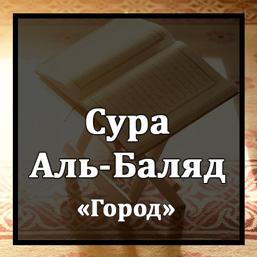

Бисмилляхир-Рахманир-Рахиим
Во имя Аллаха Милостивого и Милосердного!
Ля Уксиму Бихазаль-Баляд.
Клянусь этим городом (Меккой)!
Уа Анта Хиллюн Бихазаль-Баляд.
Ты обитаешь в этом городе.
Уа Уалидин Уа Ма Уаляд.
Клянусь родителем и тем, кого он породил!
Лякад Халякналь-Инсана Фи Кабад.
Мы создали человека с тяготами.
Айахсабу Ан Лян Йакдира `Алейхи Ахад.
Неужели он полагает, что никто не справится с ним?
Йакулю Ахлякту Малян Любадаа.
Он говорит: "Я погубил богатство несметное!"
Айахсабу Ан Лям Йараху Ахад.
Неужели он полагает, что никто не видел его?
Алям Надж`аль Ляху Айнайн.
Разве Мы не наделили его двумя глазами,
Уа Лисанаан Уа Шафатайн.
языком и двумя устами?
Уа Хадайнахун-Надждайн.
Разве Мы не повели его к двум вершинам?
Фаляктахамаль-`Акаба.
Он не стал преодолевать крутую тропу.
Уа Ма Адрака Маль-`Акаба.
Откуда ты мог знать, что такое крутая тропа?
Факку Ракаба.
Это - освобождение раба
Ау Ит`амун Фи Йаумин Зи Масгаба.
или кормление в голодный день
Йатимаан За Макраба.
сироту из числа родственников
Ау Мискинаан За Матраба.
или приникшего к земле бедняка.
Сумма Кана Миналь-Лязина Аману Уа Тауасау Бис-Сабри Уа Тауасау Биль-Мархама.
А после этого надо быть одним из тех, которые уверовали и заповедали друг другу терпение и заповедали друг другу милосердие.
Уляика Асхабуль-Маймана.
Таковы люди правой стороны.
Уаль-Лязина Кафару Би`айатина Хум Асхабуль-Маш`ама.
Те же, которые не уверовали в Наши знамения, являются людьми левой стороны,
`Алейхим Нарун Му`сада.
над которыми сомкнется огненный свод.